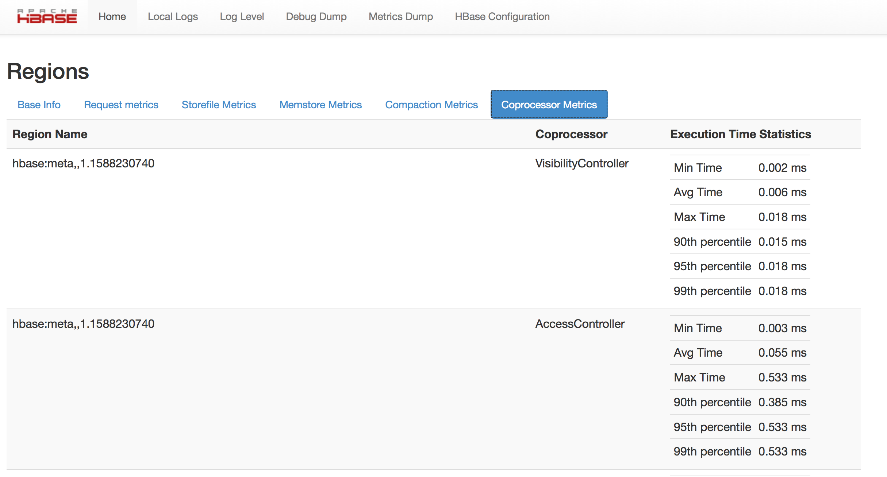

HBase 0.98.5 introduced the ability to monitor some statistics relating to the amount of time spent executing a given coprocessor. You can see these statistics via the HBase Metrics framework (see ??? or the Web UI for a given Region Server, via the Coprocessor Metrics tab. These statistics are valuable for debugging and benchmarking the performance impact of a given coprocessor on your cluster. Tracked statistics include min, max, average, and 90th, 95th, and 99th percentile. All times are shown in milliseconds. The statistics are calculated over coprocessor execution samples recorded during the reporting interval, which is 10 seconds by default. The metrics sampling rate as described in ???.
Figure 1.1. Coprocessor Metrics UI
|  |
The Coprocessor Metrics UI shows statistics about time spent executing a given coprocessor, including min, max, average, and 90th, 95th, and 99th percentile.